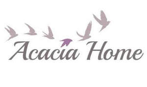

Trade Mark Journal No.2025/042 17 October 2025
UK00004273954 6 October 2025 (6,11,16,18,19,20,21,35)

- Class 6
- Common metals and their alloys, ores; metal materials for building and construction; transportable buildings of metal; non-electric cables and wires of common metal; small items of metal hardware; metal containers for storage or transport; safes; building and construction materials and elements of metal; containers, and transportation and packaging articles, of metal; doors, gates, windows and window coverings of metal; hardware of metal, small; ironmongery; metal hardware; small items of metal hardware; metal containers for storage or transport; metal garden stakes; door stops of metal; wall decorations of common metal; adhesive wall decorations of bronze; adhesive wall decorations of common metal; metal hooks; metal ironmongery; structures and transportable buildings of metal; unprocessed and semi-processed non-precious metals and their alloys; works of art and decorations, including sculptures, made primarily of non-precious metals; parts and fittings for all the aforesaid goods.
- Class 11
- Apparatus and installations for lighting, heating, cooling, steam generating, cooking, drying, ventilating, water supply and sanitary purposes; apparatus for heating and steaming items and fabrics, not for industrial purposes; burners and heaters for laboratory use; cooking, heating, cooling and preservation equipment, for food and beverages; drying apparatus; drying installations; filters for industrial and household use; fireplaces; fireplaces, domestic; fires; flues and installations for conveying exhaust gases; fog and smoke machines; heating elements and filaments; heating, ventilating, and air conditioning and purification equipment (ambient); igniters; igniting apparatus; industrial treatment apparatus and installations; lighting and lighting reflectors; lighting; garden lighting; lamps; decorative lighting; garden lights; lanterns; nuclear installations; personal heating and drying implements; refrigerating and freezing equipment; regulating and safety accessories for water and gas installations; sanitary installations, water supply and sanitation equipment; sun tanning appliances; parts and fittings for all the aforesaid goods.
- Class 16
- Paper and cardboard; printed matter; bookbinding material; photographs; stationery and office requisites, except furniture; adhesives for stationery or household purposes; drawing materials and materials for artists; paintbrushes; instructional and teaching materials; plastic sheets, films and bags for wrapping and packaging; printers' type, printing blocks; adhesives for stationery or household use; adhesives for stationery or household purposes; adhesives for stationery and household use; adhesives [glues] for stationery or household purposes; art and modelling materials and media; decorative wrapping paper; decorative paper centerpieces; bows (decorative -) for wrapping; decorative stickers for helmets; decorative stickers for cars; decorative pencil-top ornaments; decorative paper garlands for parties; decorative paper bows for wrapping; decorative stickers for automobile wheel hubs; decorative stickers for soles of shoes; decorators' paintbrushes; paper party decorations; paper cake decorations; decorations for pencils; wall decorations of paper; metallic paper party decorations; bows for decorating packaging; table decorations of paper; decorations of paper for foodstuffs; decorations of cardboard for foodstuffs; adhesive wall decorations of paper; 3d wall art made of card; 3d wall art made of paper; canvas prints; architectural models; bags and articles for packaging, wrapping and storage, of paper, cardboard or plastics; clips (money -); filter material of paper; filtering materials of paper; filtering materials [paper]; filters of paper; money clips; money holders; paper and cardboard; printed matter, and stationery and educational supplies; works of art and decorations, including figurines, made primarily of paper or cardboard, and architects’ models; parts and fittings for all the aforesaid goods.
- Class 18
- Leather and imitations of leather; leather; leather suitcases; leather wallets; leather handbags; leather purses; leather bags; leather pouches; leather briefcases; leather cases; luggage trunks; animal skins and hides; luggage and carrying bags; umbrellas and parasols; walking sticks; whips, harness and saddlery; collars, leashes and clothing for animals; canes; luggage, bags, wallets and other carriers; saddlery, whips and apparel for animals; umbrellas and parasols; walking sticks; parts and fittings for all the aforesaid goods.
- Class 19
- Materials, not of metal, for building and construction; rigid pipes, not of metal, for building; asphalt, pitch, tar and bitumen; transportable buildings, not of metal; monuments, not of metal; building and construction materials and elements, not of metal; doors, gates, windows and window coverings, not of metal; semi-processed or artificial wood; structures and transportable buildings, not of metal; garden stakes of non-metallic materials; mosaic floor tiles; mosaic wall tiles; unprocessed and semi-processed non-metallic mineral materials such as stone, clay, bitumen or concrete, or substitutes for these; works of art and decorations, including sculptures, made primarily of non-metallic mineral materials such as stone, bitumen or concrete, or of substitutes for these; parts and fittings for all the aforesaid goods.
- Class 20
- Furniture, mirrors, picture frames; furniture; mirrors; picture frames; garden furniture; plastic garden furniture; garden furniture manufactured from wood; garden furniture made of metal; pillows; decorative mirrors; chairs; footstools; wall mounted footstools; drawers; seats; side tables; ottomans; tables; display cabinets; cushions; dining chairs; stools; wooden boxes; wooden crates; wind chimes; non-metal garden stakes; benches; shelving units; door stops of plastic; door stops of wood; umbrella stands; mosaic tables; wall decorations of wax; wall decorations of wood; adhesive wall decorations of wax; adhesive wall decorations of wood; containers, not of metal, for storage or transport; unworked or semi-worked bone, horn, whalebone or mother-of-pearl; shells; meerschaum; yellow amber; animal housing and beds; containers, and closures and holders therefor, non-metallic; displays, stands and signage, non-metallic; ladders and movable steps, non-metallic; unworked and semi-worked bone, shell, amber, reed, bamboo, rattan or cork, or substitutes for these; works of art and decorations, including sculptures, made primarily of wood, straw, bone, shell, wax, resin, plastics or plaster, or of substitutes for these; plastic models for decoration; ornamental models made of wax; scale models [ornaments] of plastic; ornamental models made of wood; models [ornaments] made of wood; ornamental models made of plaster; models [ornaments] made of plaster; models [ornaments] made of plastic; models [ornaments] made of wax; scale models [ornaments] of wood; scale models [ornaments] of plaster; scale models [ornaments] of wax; miniature car models [ornaments] of wood; models [ornaments] made of synthetic resin; parts and fittings for all the aforesaid goods.
- Class 21
- Household or kitchen utensils and containers; cookware and tableware, except forks, knives and spoons; combs and sponges; brushes, except paintbrushes; brush-making materials; articles for cleaning purposes; unworked or semi-worked glass, except building glass; glassware, porcelain and earthenware; articles for the care of clothing and footwear; cosmetic, hygiene and beauty care utensils; household utensils for cleaning, brushes and brush-making materials; tableware, cookware and containers; unworked and semi-worked glass, not for building; works of art and decorations, including sculptures, made primarily of ceramics or glass, or of substitutes for these; decorative plates; decorative china; decorative chinaware; decorative glass spheres; decorative sand bottles; decorative stained glass; decorative porcelain ware; porcelain cake decorations; decorating bags for confectioners; decorative boxes of glass; powdered glass for decoration; bowls for floral decorations; wall decorations of porcelain; ice sculptures for decorative purposes; cake decorating tips and tubes; decorative glass, not for building; figurines made of decorative glass; porcelain articles for decorative purposes; confectioners' decorating bags [pastry bags]; decorative objects [ornaments] made of glass; wall decorations of terra-cotta; decorative glass [not for building]; ornamental glass spheres; ornamental figurines made of glass; ceramic ornaments; glass ornaments; china ornaments; 3d wall art of made of porcelain; 3d wall art of made of ceramic; 3d wall art of made of glass; raised garden planters; planters of porcelain; planters of earthenware; bird baths; bird cages; pots; bowls; glass mosaics, not for buildings; jars; candlesticks; vases; floor vases; ornamental models made of porcelain; ornamental models made of china; parts and fittings for all the aforesaid goods.
- Class 35
- Advertising; business management, organization and administration; office functions; advertising, marketing and promotional services; advertising, marketing and promotion services; advertising, promotional and marketing services; business assistance, management and administrative services; marketing, advertising, and promotional services; marketing, advertising and promotion services; retail services relating to common metals and their alloys, ores, metal materials for building and construction, transportable buildings of metal, non-electric cables and wires of common metal, small items of metal hardware, metal containers for storage or transport, safes, building and construction materials and elements of metal, containers, and transportation and packaging articles, of metal, doors, gates, windows and window coverings of metal, hardware of metal, small, ironmongery, metal hardware, small items of metal hardware, metal containers for storage or transport, metal garden stakes, door stops of metal, wall decorations of common metal, adhesive wall decorations of bronze, adhesive wall decorations of common metal, metal hooks, metal ironmongery, structures and transportable buildings of metal, unprocessed and semi-processed non-precious metals and their alloys, works of art and decorations, including sculptures, made primarily of non-precious metals, apparatus and installations for lighting, heating, cooling, steam generating, cooking, drying, ventilating, water supply and sanitary purposes, apparatus for heating and steaming items and fabrics, not for industrial purposes, burners and heaters for laboratory use, cooking, heating, cooling and preservation equipment, for food and beverages, drying apparatus, drying installations, filters for industrial and household use, fireplaces, fireplaces, domestic, fires, flues and installations for conveying exhaust gases, fog and smoke machines, heating elements and filaments, heating, ventilating, and air conditioning and purification equipment (ambient), igniters, igniting apparatus, industrial treatment apparatus and installations, lighting and lighting reflectors, lighting, garden lighting, lamps, decorative lighting, garden lights, lanterns, nuclear installations, personal heating and drying implements, refrigerating and freezing equipment, regulating and safety accessories for water and gas installations, sanitary installations, water supply and sanitation equipment, sun tanning appliances, paper and cardboard, printed matter, bookbinding material, photographs, stationery and office requisites, except furniture, adhesives for stationery or household purposes, drawing materials and materials for artists, paintbrushes, instructional and teaching materials, plastic sheets, films and bags for wrapping and packaging, printers' type, printing blocks, adhesives for stationery or household use, adhesives for stationery or household purposes, adhesives for stationery and household use, adhesives [glues] for stationery or household purposes, art and modelling materials and media, decorative wrapping paper, decorative paper centerpieces, bows (decorative -) for wrapping, decorative stickers for helmets, decorative stickers for cars, decorative pencil-top ornaments, decorative paper garlands for parties, decorative paper bows for wrapping, decorative stickers for automobile wheel hubs, decorative stickers for soles of shoes, decorators' paintbrushes, paper party decorations, paper cake decorations, decorations for pencils, wall decorations of paper, metallic paper party decorations, bows for decorating packaging, table decorations of paper, decorations of paper for foodstuffs, decorations of cardboard for foodstuffs, adhesive wall decorations of paper, 3d wall art made of card, 3d wall art made of paper, canvas prints, architectural models, bags and articles for packaging, wrapping and storage, of paper, cardboard or plastics, clips (money -), filter material of paper, filtering materials of paper, filtering materials [paper], filters of paper, money clips, money holders, paper and cardboard, printed matter, and stationery and educational supplies, works of art and decorations, including figurines, made primarily of paper or cardboard, and architects’ models, leather and imitations of leather, leather, leather suitcases, leather wallets, leather handbags, leather purses, leather bags, leather pouches, leather briefcases, leather cases, luggage trunks, animal skins and hides, luggage and carrying bags, umbrellas and parasols, walking sticks, whips, harness and saddlery, collars, leashes and clothing for animals, canes, luggage, bags, wallets and other carriers, saddlery, whips and apparel for animals, umbrellas and parasols, walking sticks, materials, not of metal, for building and construction, rigid pipes, not of metal, for building, asphalt, pitch, tar and bitumen, transportable buildings, not of metal, monuments, not of metal, building and construction materials and elements, not of metal, doors, gates, windows and window coverings, not of metal, semi-processed or artificial wood, structures and transportable buildings, not of metal, garden stakes of non-metallic materials, mosaic floor tiles, mosaic wall tiles, unprocessed and semi-processed non-metallic mineral materials such as stone, clay, bitumen or concrete, or substitutes for these, works of art and decorations, including sculptures, made primarily of non-metallic mineral materials such as stone, bitumen or concrete, or of substitutes for these, furniture, mirrors, picture frames, furniture, mirrors, picture frames, garden furniture, plastic garden furniture, garden furniture manufactured from wood, garden furniture made of metal, pillows, decorative mirrors, chairs, footstools, wall mounted footstools, drawers, seats, side tables, ottomans, tables, display cabinets, cushions, dining chairs, stools, wooden boxes, wooden crates, wind chimes, non-metal garden stakes, benches, shelving units, door stops of plastic, door stops of wood, umbrella stands, mosaic tables, wall decorations of wax, wall decorations of wood, adhesive wall decorations of wax, adhesive wall decorations of wood, containers, not of metal, for storage or transport, unworked or semi-worked bone, horn, whalebone or mother-of-pearl, shells, meerschaum, yellow amber, animal housing and beds, containers, and closures and holders therefor, non-metallic, displays, stands and signage, non-metallic, ladders and movable steps, non-metallic, unworked and semi-worked bone, shell, amber, reed, bamboo, rattan or cork, or substitutes for these, works of art and decorations, including sculptures, made primarily of wood, straw, bone, shell, wax, resin, plastics or plaster, or of substitutes for these, plastic models for decoration, ornamental models made of wax, scale models [ornaments] of plastic, ornamental models made of wood, models [ornaments] made of wood, ornamental models made of plaster, models [ornaments] made of plaster, models [ornaments] made of plastic, models [ornaments] made of wax, scale models [ornaments] of wood, scale models [ornaments] of plaster, scale models [ornaments] of wax, miniature car models [ornaments] of wood, models [ornaments] made of synthetic resin, household or kitchen utensils and containers, cookware and tableware, except forks, knives and spoons, combs and sponges, brushes, except paintbrushes, brush-making materials, articles for cleaning purposes, unworked or semi-worked glass, except building glass, glassware, porcelain and earthenware, articles for the care of clothing and footwear, cosmetic, hygiene and beauty care utensils, household utensils for cleaning, brushes and brush-making materials, tableware, cookware and containers, unworked and semi-worked glass, not for building, works of art and decorations, including sculptures, made primarily of ceramics or glass, or of substitutes for these, decorative plates, decorative china, decorative chinaware, decorative glass spheres, decorative sand bottles, decorative stained glass, decorative porcelain ware, porcelain cake decorations, decorating bags for confectioners, decorative boxes of glass, powdered glass for decoration, bowls for floral decorations, wall decorations of porcelain, ice sculptures for decorative purposes, cake decorating tips and tubes, decorative glass, not for building, figurines made of decorative glass, porcelain articles for decorative purposes, confectioners' decorating bags [pastry bags], decorative objects [ornaments] made of glass, wall decorations of terra-cotta, decorative glass [not for building], ornamental glass spheres, ornamental figurines made of glass, ceramic ornaments, glass ornaments, china ornaments, 3d wall art of made of porcelain, 3d wall art of made of ceramic, 3d wall art of made of glass, raised garden planters, planters of porcelain, planters of earthenware, bird baths, bird cages, pots, bowls, glass mosaics, not for buildings, jars, candlesticks, vases, floor vases, ornamental models made of porcelain, ornamental models made of china, parts and fittings for all the aforesaid goods; online retail services relating to common metals and their alloys, ores, metal materials for building and construction, transportable buildings of metal, non-electric cables and wires of common metal, small items of metal hardware, metal containers for storage or transport, safes, building and construction materials and elements of metal, containers, and transportation and packaging articles, of metal, doors, gates, windows and window coverings of metal, hardware of metal, small, ironmongery, metal hardware, small items of metal hardware, metal containers for storage or transport, metal garden stakes, door stops of metal, wall decorations of common metal, adhesive wall decorations of bronze, adhesive wall decorations of common metal, metal hooks, metal ironmongery, structures and transportable buildings of metal, unprocessed and semi-processed non-precious metals and their alloys, works of art and decorations, including sculptures, made primarily of non-precious metals, apparatus and installations for lighting, heating, cooling, steam generating, cooking, drying, ventilating, water supply and sanitary purposes, apparatus for heating and steaming items and fabrics, not for industrial purposes, burners and heaters for laboratory use, cooking, heating, cooling and preservation equipment, for food and beverages, drying apparatus, drying installations, filters for industrial and household use, fireplaces, fireplaces, domestic, fires, flues and installations for conveying exhaust gases, fog and smoke machines, heating elements and filaments, heating, ventilating, and air conditioning and purification equipment (ambient), igniters, igniting apparatus, industrial treatment apparatus and installations, lighting and lighting reflectors, lighting, garden lighting, lamps, decorative lighting, garden lights, lanterns, nuclear installations, personal heating and drying implements, refrigerating and freezing equipment, regulating and safety accessories for water and gas installations, sanitary installations, water supply and sanitation equipment, sun tanning appliances, paper and cardboard, printed matter, bookbinding material, photographs, stationery and office requisites, except furniture, adhesives for stationery or household purposes, drawing materials and materials for artists, paintbrushes, instructional and teaching materials, plastic sheets, films and bags for wrapping and packaging, printers' type, printing blocks, adhesives for stationery or household use, adhesives for stationery or household purposes, adhesives for stationery and household use, adhesives [glues] for stationery or household purposes, art and modelling materials and media, decorative wrapping paper, decorative paper centerpieces, bows (decorative -) for wrapping, decorative stickers for helmets, decorative stickers for cars, decorative pencil-top ornaments, decorative paper garlands for parties, decorative paper bows for wrapping, decorative stickers for automobile wheel hubs, decorative stickers for soles of shoes, decorators' paintbrushes, paper party decorations, paper cake decorations, decorations for pencils, wall decorations of paper, metallic paper party decorations, bows for decorating packaging, table decorations of paper, decorations of paper for foodstuffs, decorations of cardboard for foodstuffs, adhesive wall decorations of paper, 3d wall art made of card, 3d wall art made of paper, canvas prints, architectural models, bags and articles for packaging, wrapping and storage, of paper, cardboard or plastics, clips (money -), filter material of paper, filtering materials of paper, filtering materials [paper], filters of paper, money clips, money holders, paper and cardboard, printed matter, and stationery and educational supplies, works of art and decorations, including figurines, made primarily of paper or cardboard, and architects’ models, leather and imitations of leather, leather, leather suitcases, leather wallets, leather handbags, leather purses, leather bags, leather pouches, leather briefcases, leather cases, luggage trunks, animal skins and hides, luggage and carrying bags, umbrellas and parasols, walking sticks, whips, harness and saddlery, collars, leashes and clothing for animals, canes, luggage, bags, wallets and other carriers, saddlery, whips and apparel for animals, umbrellas and parasols, walking sticks, materials, not of metal, for building and construction, rigid pipes, not of metal, for building, asphalt, pitch, tar and bitumen, transportable buildings, not of metal, monuments, not of metal, building and construction materials and elements, not of metal, doors, gates, windows and window coverings, not of metal, semi-processed or artificial wood, structures and transportable buildings, not of metal, garden stakes of non-metallic materials, mosaic floor tiles, mosaic wall tiles, unprocessed and semi-processed non-metallic mineral materials such as stone, clay, bitumen or concrete, or substitutes for these, works of art and decorations, including sculptures, made primarily of non-metallic mineral materials such as stone, bitumen or concrete, or of substitutes for these, furniture, mirrors, picture frames, furniture, mirrors, picture frames, garden furniture, plastic garden furniture, garden furniture manufactured from wood, garden furniture made of metal, pillows, decorative mirrors, chairs, footstools, wall mounted footstools, drawers, seats, side tables, ottomans, tables, display cabinets, cushions, dining chairs, stools, wooden boxes, wooden crates, wind chimes, non-metal garden stakes, benches, shelving units, door stops of plastic, door stops of wood, umbrella stands, mosaic tables, wall decorations of wax, wall decorations of wood, adhesive wall decorations of wax, adhesive wall decorations of wood, containers, not of metal, for storage or transport, unworked or semi-worked bone, horn, whalebone or mother-of-pearl, shells, meerschaum, yellow amber, animal housing and beds, containers, and closures and holders therefor, non-metallic, displays, stands and signage, non-metallic, ladders and movable steps, non-metallic, unworked and semi-worked bone, shell, amber, reed, bamboo, rattan or cork, or substitutes for these, works of art and decorations, including sculptures, made primarily of wood, straw, bone, shell, wax, resin, plastics or plaster, or of substitutes for these, plastic models for decoration, ornamental models made of wax, scale models [ornaments] of plastic, ornamental models made of wood, models [ornaments] made of wood, ornamental models made of plaster, models [ornaments] made of plaster, models [ornaments] made of plastic, models [ornaments] made of wax, scale models [ornaments] of wood, scale models [ornaments] of plaster, scale models [ornaments] of wax, miniature car models [ornaments] of wood, models [ornaments] made of synthetic resin, household or kitchen utensils and containers, cookware and tableware, except forks, knives and spoons, combs and sponges, brushes, except paintbrushes, brush-making materials, articles for cleaning purposes, unworked or semi-worked glass, except building glass, glassware, porcelain and earthenware, articles for the care of clothing and footwear, cosmetic, hygiene and beauty care utensils, household utensils for cleaning, brushes and brush-making materials, tableware, cookware and containers, unworked and semi-worked glass, not for building, works of art and decorations, including sculptures, made primarily of ceramics or glass, or of substitutes for these, decorative plates, decorative china, decorative chinaware, decorative glass spheres, decorative sand bottles, decorative stained glass, decorative porcelain ware, porcelain cake decorations, decorating bags for confectioners, decorative boxes of glass, powdered glass for decoration, bowls for floral decorations, wall decorations of porcelain, ice sculptures for decorative purposes, cake decorating tips and tubes, decorative glass, not for building, figurines made of decorative glass, porcelain articles for decorative purposes, confectioners' decorating bags [pastry bags], decorative objects [ornaments] made of glass, wall decorations of terra-cotta, decorative glass [not for building], ornamental glass spheres, ornamental figurines made of glass, ceramic ornaments, glass ornaments, china ornaments, 3d wall art of made of porcelain, 3d wall art of made of ceramic, 3d wall art of made of glass, raised garden planters, planters of porcelain, planters of earthenware, bird baths, bird cages, pots, bowls, glass mosaics, not for buildings, jars, candlesticks, vases, floor vases, ornamental models made of porcelain, ornamental models made of china, parts and fittings for all the aforesaid goods; information, advisory and consultancy services relating to the aforesaid.
ACACIA TRADING (LEEDS) LIMITED
Representative: Stobbs